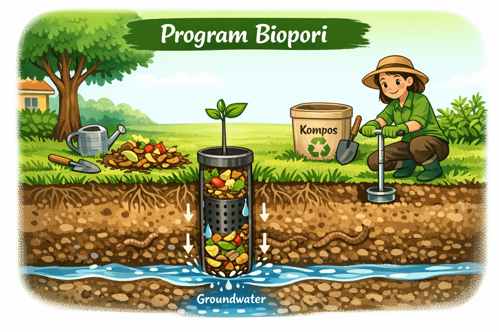
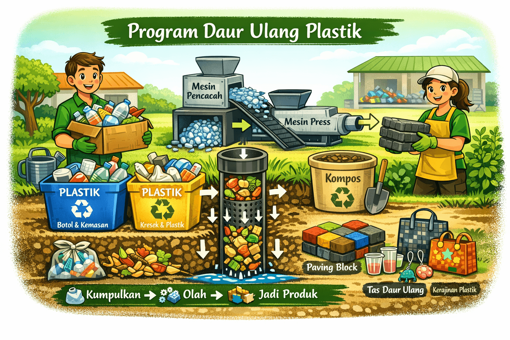
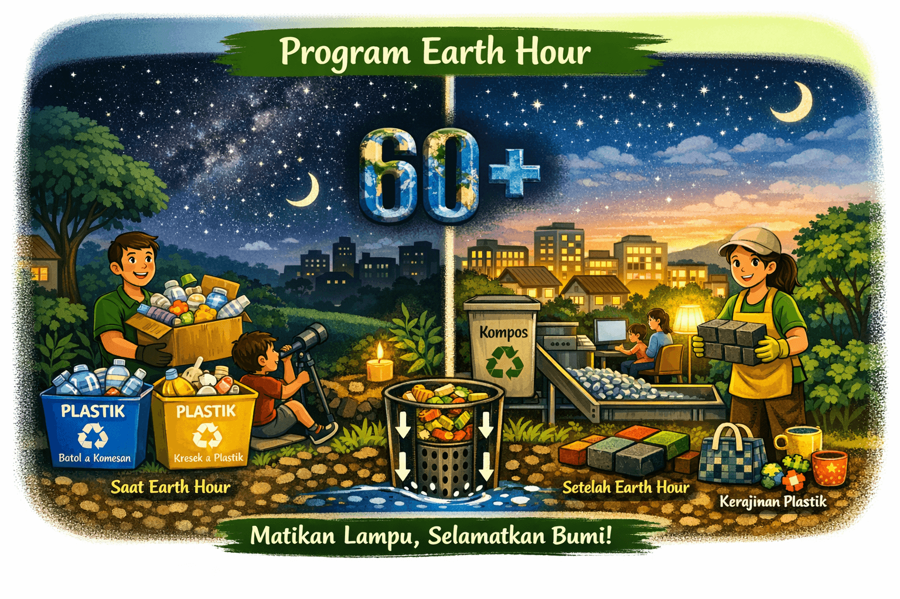
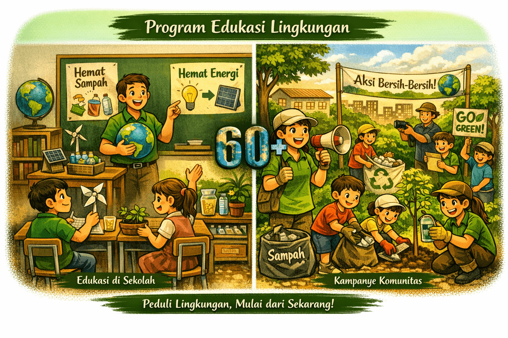

Mengapa Sustainability itu penting?
Gaya hidup sehari-hari kita memiliki dampak besar terhadap lingkungan. Kebiasaan sederhana seperti penggunaan plastik sekali pakai, konsumsi energi berlebihan, dan pemborosan air dapat mempercepat kerusakan ekosistem.
Dengan menerapkan prinsip sustainability, setiap individu bisa berkontribusi menjaga bumi: mengurangi sampah, menghemat energi, dan memilih produk ramah lingkungan. Langkah kecil di rumah dapat menciptakan perubahan besar bagi masa depan planet kita.
Langkah Kecil yang Bisa Kita Lakukan
Perubahan besar dimulai dari kebiasaan kecil di rumah. Dengan langkah sederhana, kita bisa mengurangi dampak negatif terhadap lingkungan sekaligus membangun gaya hidup yang lebih berkelanjutan.
- Matikan lampu dan peralatan listrik saat tidak digunakan
- Kurangi penggunaan plastik sekali pakai
- Gunakan air secukupnya dan hindari pemborosan
- Pisahkan sampah organik dan anorganik
- Tanam tanaman atau pohon di sekitar rumah
- Langkah membangun kebiasaan:
- Mulai dari kebiasaan kecil yang kamu ulang setiap hari
- Ajak keluarga untuk ikut berpartisipasi
- Bagikan inspirasi ke teman dan komunitas
Program Ecopoetica
Selain memberikan edukasi, Ecopoetica juga menjalankan berbagai program nyata yang dapat diikuti masyarakat untuk mendukung gerakan sadar lingkungan.
Daftar Program:
- Program Biopori
-

Membuat lubang biopori di halaman rumah untuk meningkatkan daya serap air, mengurangi genangan, dan menghasilkan kompos dari sampah organik.
- Program Daur Ulang Plastik
-

Mengumpulkan sampah plastik dari rumah tangga lalu mengolahnya menjadi produk bernilai ekonomis seperti paving block atau kerajinan tangan.
- Program Earth Hour
-

Mengajak masyarakat mematikan listrik selama satu jam setiap tahun sebagai simbol komitmen mengurangi emisi dan hemat energi.
- Program Edukasi Lingkungan
-

Mengadakan workshop dan kampanye di sekolah serta komunitas untuk menumbuhkan kesadaran menjaga lingkungan sejak dini.